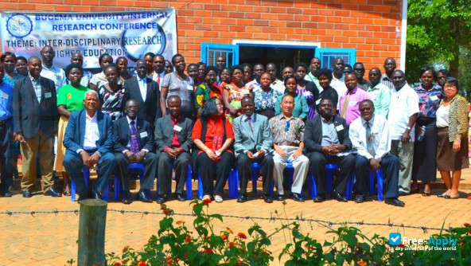

Information About Bugem University
-
Founded
The institution started in 1948 as a training school for teachers and pastors for the Seventh-day Adventist Church in East Africa. At that time it was called Bugema Missionary Training School. Later, the name changed to Bugema Missionary College and then to Bugema Adventist College. In 1976 Bugema Adventist College received authorization from the Uganda Ministry of Education and the General Conference of Seventh-day Adventists to offer a BTh degree. The college had applied to offer a BA in Theology, but the Ministry of Education denied the application because at that time only Makerere University was permitted to offer academic degrees. There were about 35 students in the program. The professors were Pastor and Mrs. Villagomez, and Pastor Gary Fordham. After President Idi Amin banned the Seventh-day Adventist church in 1977, the program was temporarily moved to Nairobi where the first degree students graduated with a BTh degree in 1978. The campus was then relocated to the church's youth camp (at Watamu just north of Mombasa) until Amin fled Uganda. While the college was at Watamu, Reuben Mugerwa finished his graduate degree at Andrews University and joined the faculty. The college was then moved back to the Bugema campus. The college expanded. By the late 1980s curricula for Business and Education were added. In 1994, Bugema Adventist College changed its status from "college" to "university". In 1997, Bugema University was granted a tertiary institution license from the Ministry of Education and Sports.